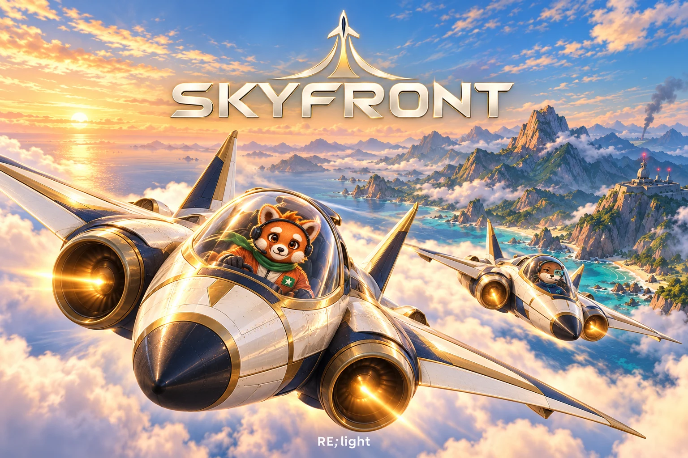
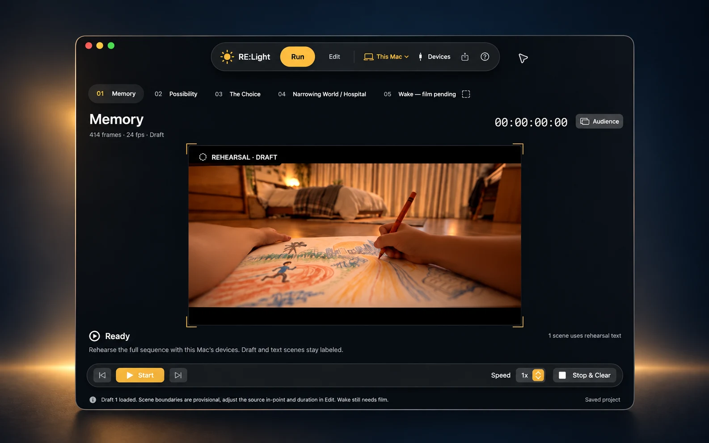
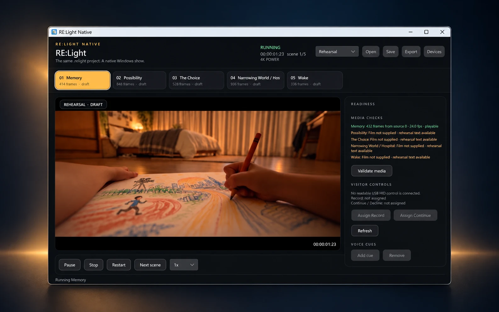

SKYFRONT
ขึ้นบิน คุ้มกันทีม แล้วพาทุกคนกลับบ้าน
เกมแอ็กชันการบิน · คอมพิวเตอร์และมือถือแนวนอนเรียนรู้เรื่องบุหรี่ไฟฟ้าและนิโคติน
ผ่านข้อมูล เรื่องราว และโลกที่คุณเลือกเข้าไป
สองประสบการณ์ คนละมุมมอง
เล่นผ่านเบราว์เซอร์ได้เลย

ขึ้นบิน คุ้มกันทีม แล้วพาทุกคนกลับบ้าน
เกมแอ็กชันการบิน · คอมพิวเตอร์และมือถือแนวนอนพา Airy ผ่านโลกข้างใน กลับสู่อากาศใส
เกมผจญภัย 3 มิติ · คอมพิวเตอร์ข้อมูล เกมสถานการณ์ และพื้นที่คำตอบ
อยู่ใน RE;light Education
แอปควบคุมสื่อสำหรับนิทรรศการ
เลือกให้ตรงกับเครื่องของคุณ

RE;light Native 2.1.1
Apple silicon · macOS 14 ขึ้นไป
เปิด .dmg แล้วลากแอปไป Applications รุ่นดาวน์โหลดสาธารณะคือ 2.1.1 ซึ่งแยกจากรุ่นอ้างอิง 2.1.2 build 7 ในการพัฒนา ตรวจสอบแหล่งดาวน์โหลดและ SHA-256 ก่อนอนุญาตเปิดใน Privacy & Security
สื่อที่มากับรุ่นเดิมเป็นตัวอย่างสำหรับทดสอบ ไม่ใช่ภาพยนตร์ฉบับตัดต่อเสร็จ
ไฟล์และ SHA-256 ของรุ่น Mac ↗
RE;light Native 2.2.0-alpha.1
Windows 11 · ARM64 และ x64
คอมพิวเตอร์ Intel / AMD ใช้ x64 ส่วน Windows on ARM ใช้ ARM64 ติดตั้งสำหรับผู้ใช้ปัจจุบัน ไม่ต้องใช้สิทธิ์ผู้ดูแลระบบ
รุ่น ARM64 ผ่านการทดสอบติดตั้ง เปิดโปรเจกต์ และเล่นสื่อบน Windows 11 ตามบันทึกของรุ่น ส่วน x64 ทดสอบเปิดผ่านระบบจำลองบน ARM64 เท่านั้น การทดสอบอุปกรณ์เสียง ปุ่ม HID และโปรเจกเตอร์ยังไม่ครบ
ตรวจสอบ SHA-256 บนหน้า Release ก่อนอนุญาตเปิดไฟล์ผ่าน SmartScreen รุ่นนี้ยังไม่ใช่รุ่นพร้อมใช้งานนิทรรศการที่ผ่านการรับรองทุกอุปกรณ์
ไฟล์ บันทึกทดสอบ และ SHA-256 ↗อยู่ระหว่างตัดต่อ
ประสบการณ์ภาพยนตร์ฉบับสมบูรณ์จะเชื่อมเข้ามาที่นี่เมื่อพร้อม
ระหว่างนี้ คุณเริ่มเรียนรู้และเล่นเกมได้จากทุกที่
ข้อมูลในเอกสารเหล่านี้เป็นประวัติการพัฒนา อาจไม่ตรงกับเกม แอป หรือแผนภาพยนตร์ปัจจุบัน ไฟล์ ZIP ของเว็บไซต์รุ่นเดิมอยู่ใน GitHub Releases